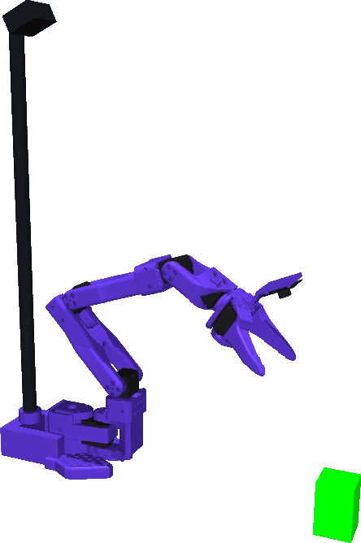

기록 불러오는 중

CAMERA MONITOR
관측 화면
연결 중시뮬레이터에 연결하고 있어요.
손목 · 베이스 · 탑 순서로 녹화한 영상입니다. 판단 대기 구간은 압축했습니다.
EXPERIMENT ARCHIVE
실험 기록
카메라 관찰과 행동 기록
선택한 행동 직전의 사진 · 손목 / 베이스 / 탑
시뮬레이션 설정과 관절 범위
탑카메라는 베이스 뒤쪽 소켓의 셀카봉에 장착했습니다. 카메라 각도와 치수는 실측 전 임시값입니다. 아래 값은 시뮬레이션의 기준 자세에서 한 관절씩 움직여 측정한 각도입니다.
| 관절 | 모델 한계 | 측정 범위 |
|---|